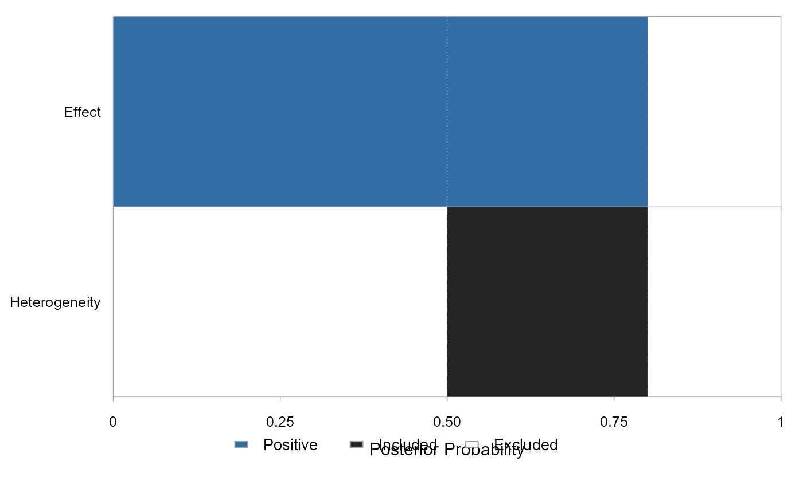

R/model-averaging-plots-probabilities.R
plot_model_probabilities.RdDraw aligned strips whose widths are the posterior probabilities of the models. Each row uses colour to show the supplied state of each model.
plot_model_probabilities(
model_probabilities,
cells,
plot_type = "base",
...,
group_labels = FALSE,
labels = NULL,
decreasing = TRUE,
col = NULL,
legend = FALSE,
legend_position = "bottom",
state_labels = NULL
)Named numeric vector of posterior model probabilities. The names must be unique model IDs and the probabilities must sum to one up to numerical tolerance.
Data frame with character columns model (model ID), row
(row ID), label (row label), and state. The optional character column
group provides group labels, with "" for ungrouped rows. Supply
exactly one cell per model and row, with the same label and group for
every cell of a row. Rows appear from top to bottom in order of first
occurrence in cells.
Either "base" or "ggplot".
Reserved for future use.
Whether to label consecutive groups of rows in the left margin. A group that reappears later has its label repeated.
Named character vector of optional label overrides, keyed by row ID.
Whether to sort models from highest to lowest probability.
Set to FALSE to sort from lowest to highest. Ties retain the order in
model_probabilities.
Named character vector of colours keyed by state. Built-in states
are "positive" (blue), "negative" (red), "included" (black), and
"excluded" (white). Supply a colour for each other state used in
cells.
Whether to show a legend for visible states.
Place the legend outside the panel at "bottom" or
"top".
Named character vector of optional legend labels keyed by state. Custom states use their keys as labels by default.
With plot_type = "base", draws a plot and returns NULL
invisibly. With plot_type = "ggplot", returns a ggplot object with an
integer "n_rows" attribute giving the number of displayed rows.
The caller supplies the model states. For example, directional states can describe the sign of a within-model estimate, while inclusion states can describe components without a signed estimate. Cells in a model share their probability interval across all rows. Models with zero probability have no visible cells. To select or reorder rows, pass the corresponding cells in the desired row order.
probabilities <- c(null = 0.2, effect = 0.5, full = 0.3)
cells <- data.frame(
model = rep(names(probabilities), 2),
row = rep(c("effect", "heterogeneity"), each = 3),
label = rep(c("Effect", "Heterogeneity"), each = 3),
state = c("excluded", "positive", "positive",
"excluded", "excluded", "included")
)
plot_model_probabilities(probabilities, cells, legend = TRUE)
